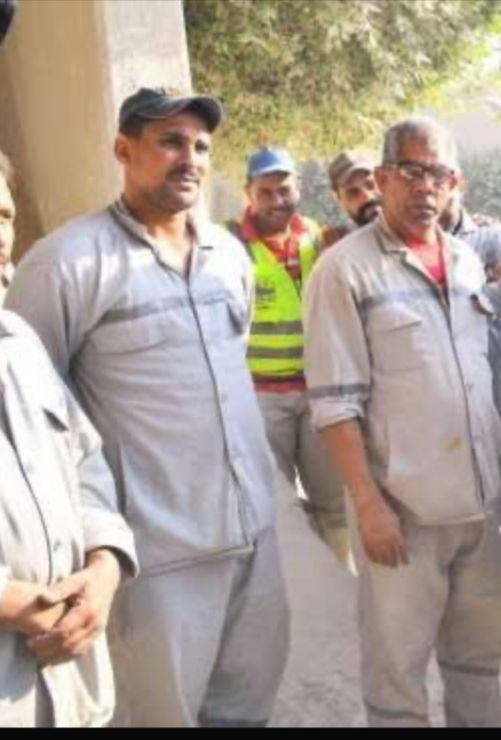

في الطريق المؤدي إلى قرية بنوفر بمدينة كفر الزيات بمحافظة الغربية، وعلى مقربة من نهر النيل، يواصل مصنع الأسمدة التابع للشركة المالية والصناعية نشاطه الإنتاجي، باعتباره أحد المنشآت الصناعية المرتبطة بقطاع الأسمدة والمنتجات الزراعية، وذلك بالتزامن مع استمرار عمليات التشغيل والتطوير داخل المصنع.
معلم صناعي راسخ
ويُعد المصنع من المنشآت الصناعية المعروفة داخل مدينة كفر الزيات، حيث ارتبط اسمه بالنشاط الصناعي بالمنطقة منذ سنوات طويلة، ويعمل في إنتاج الأسمدة الفوسفاتية وعدد من المنتجات الكيميائية المرتبطة بالقطاع الزراعي.
متابعة ميدانية
وخلال متابعة ميدانية بمحيط المصنع، رُصدت حركة تشغيل منتظمة داخل المنشأة، إلى جانب دخول وخروج سيارات النقل بشكل مستمر، وانتظام حركة العاملين بمختلف الأقسام.
كما تشير المعلومات المتداولة عن الشركة إلى توجهها خلال السنوات الأخيرة نحو تطوير المنتجات والتوسع في الأسواق المحلية والإقليمية، بجانب تحسين الكفاءة التشغيلية والاستثمار في التكنولوجيا الحديثة.
"المصنع بقاله سنوات طويلة موجود في المنطقة، وفيه ناس كتير اشتغلت فيه لفترات طويلة، والعمل بيتم وفق نظام ورديات داخل الأقسام المختلفة."
"في الفترة الأخيرة حصل اهتمام أكبر بالتطوير داخل بعض مراحل العمل، وده انعكس على طبيعة التشغيل."

كما أوضح عدد من الأهالي أن المصنع يُعد أحد المعالم الصناعية المعروفة داخل كفر الزيات، خاصة لارتباطه بالنشاط الاقتصادي وفرص العمل.
ويواصل المصنع نشاطه داخل مدينة كفر الزيات باعتباره أحد الكيانات الصناعية المرتبطة بالإنتاج الزراعي، في وقت تشهد فيه الصناعة تطورات مستمرة في أساليب التشغيل والتوسع.


أترك تعليقاً...